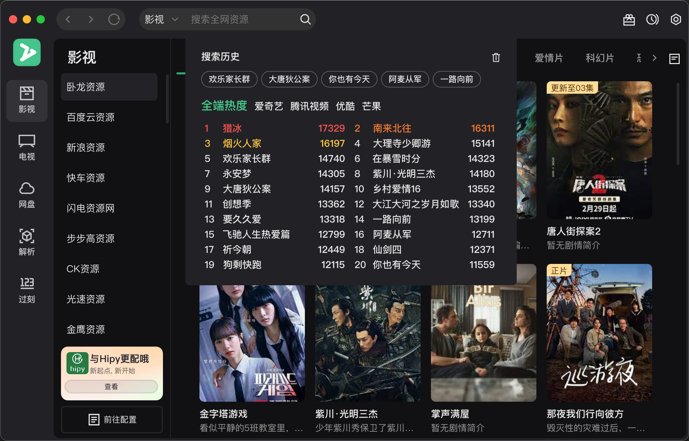
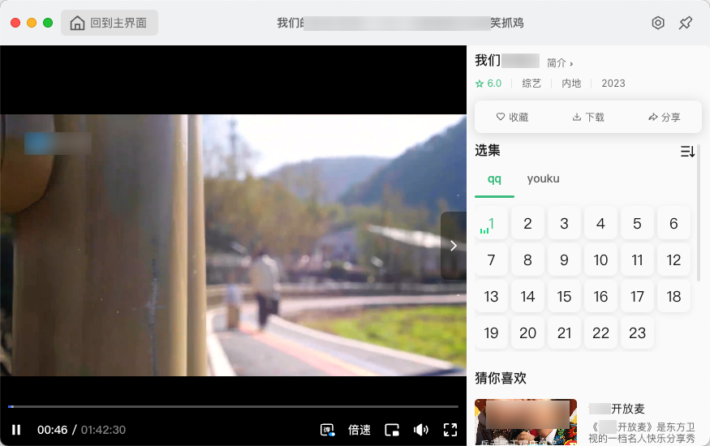
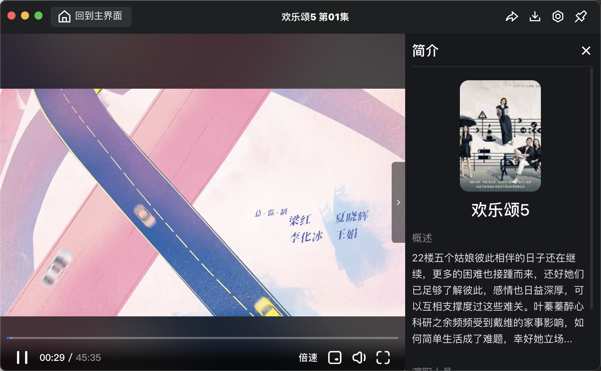
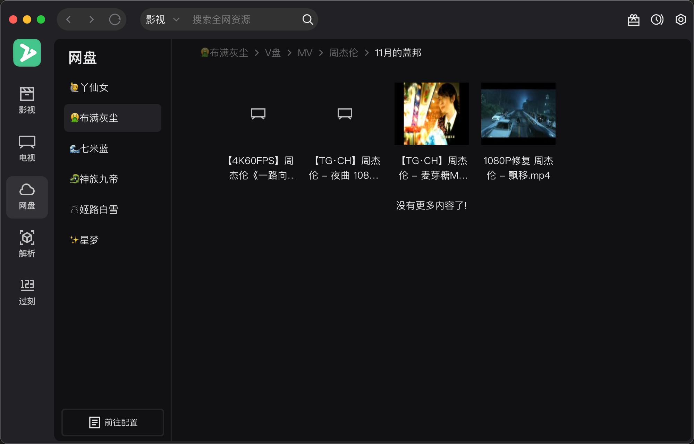
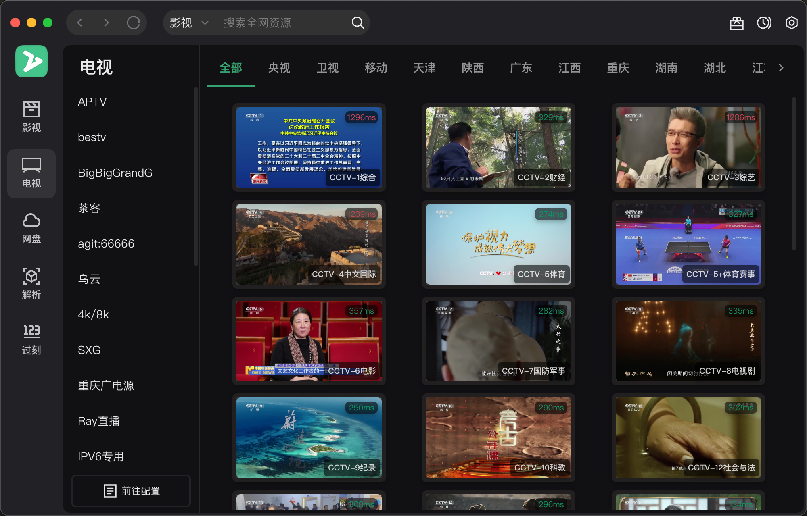
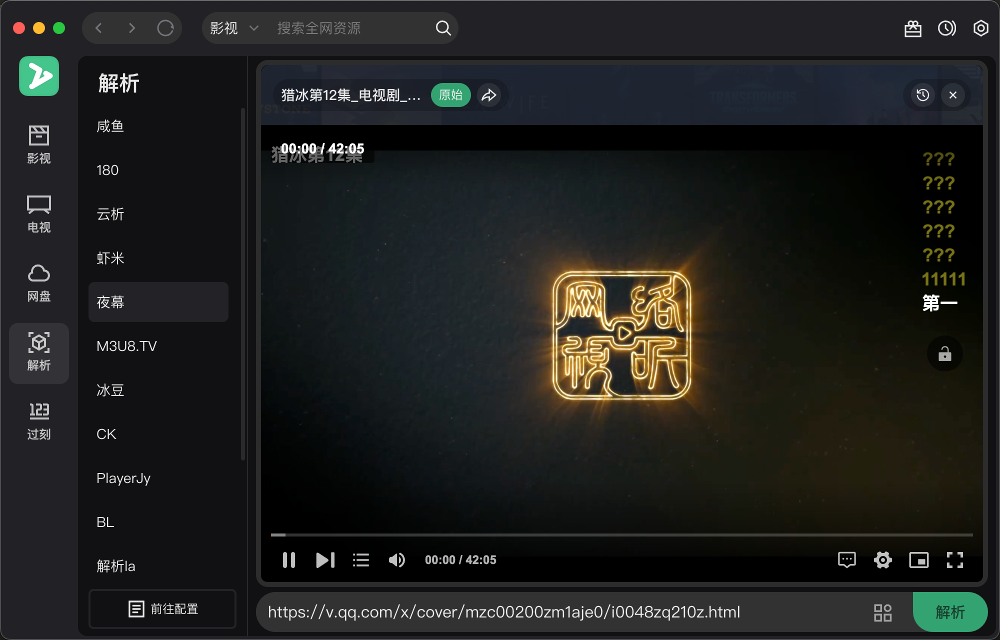
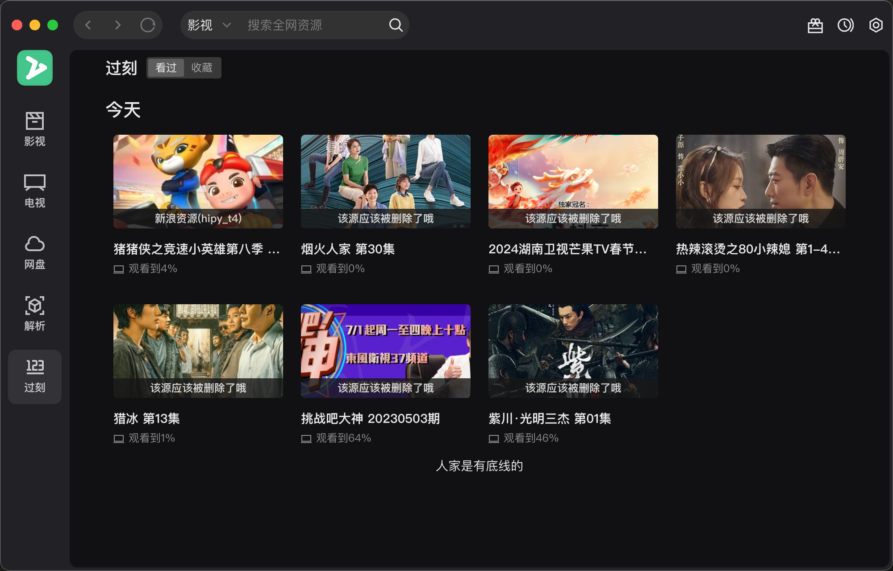
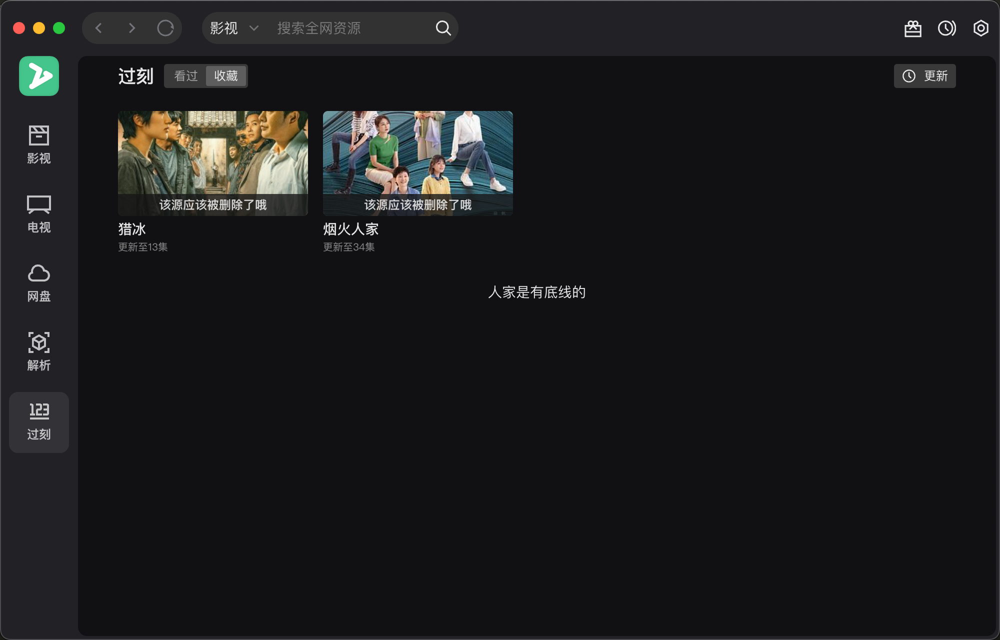

软件介绍
ZyPlayer 是一款采用现代化技术栈开发的全功能媒体播放器，它基于 electron-vite 框架，集成了 TDesign UI 组件库与 Vue3 全家桶，以清新的薄荷绿为主题，旨在为用户提供流畅的跨平台娱乐体验。
重要提醒: 在开始使用前，请务必详读并同意用户协议，确保遵守相关规定。
🎉 功能亮点
- 广泛兼容：全面支持 Windows、Mac、Linux 系统。
- 深色模式：适配夜间使用，保护视力。
- 资源站接入：轻松管理 json、xml 等格式的 CMS。
- IPTV 支持：无缝播放 m3u、genre 格式及集成 EPG。
- 视频平台解析：解锁主流在线视频内容。
- 快捷隐藏：内置老板键，隐私保护一键到位。
- 多播放器：内置多种播放器核心，满足不同需求。
🖼️ 屏幕截图预览
点我查看示部分截图
| 影视(首页) | 影视(搜索) |
|---|---|
|  | |
| 影视(播放) | 影视 (介绍) |
|  |  |
| 网盘 | 直播(首页) |
|  |  |
| 直播(播放) | 解析 |
|  | |
| 历史记录 | 在追 |
|  |  |
🌴 法律声明与注意事项
- 强烈倡导合法观影，本软件仅作为播放工具，不涉及资源存储或分发。
- 仅供个人学习交流之用，24小时内请自觉卸载，勿作商业用途。
- 软件提供播放框架，具体播放源需用户自行配置。
- 部分灵感来源于ZY-Player，图标素材感谢[@fourbeauty]贡献。
播放器特性概览
- 没有完美的播放器
- 如果只有画面没声音 - 一般为没有声轨
- 如果黑屏有声音 - 一般为播放器不支持H265[HEVC]
- 播放器选择需考虑格式兼容性，如 h264 与 h265 的差异
- 针对播放失败, 建议切换播放器或者调用系统播放器
安装包说明
- MacOS: 提供 arm64、x64 及 universal 三种架构安装包。
- Windows: 支持 arm64、x64、ia32，以及通用版本，但请注意 Electron 23 起不再支持 Win 7/8/8.1。
- Linux: 针对 arm64、x64 架构发行 image、deb、rpm 安装包。
🛠️ 下载与安装
- 最新版下载: 访问 GitHub 发布页面 获取。
macOS 安装问题解决方案
若遇到“已损坏”提示，执行以下命令修复权限
bash
sudo xattr -cr /Applications/zyplayer.appLinux Appimage桌面快捷方式设置
bash
[1] 选择一张icon图标下载
[2] 在任意位置新建一个名为zyplayer.desktop的文件，并写入如下内容
[Desktop Entry]
Name=zyplayer
Exec=/home/xxx/Downloads/zyplayer-3.3.5.AppImage # AppImage程序路径
Icon=/home/xxx/Downloads/zyplayer.png # 图标路径
Type=Application
StartupNotify=true
[3] 保存zyplayer.desktop后右键属性,在权限目录下允许作为程序执行文件上打钩
[4] 讲zyplayer.desktop文件复制到/usr/share/applications路径下